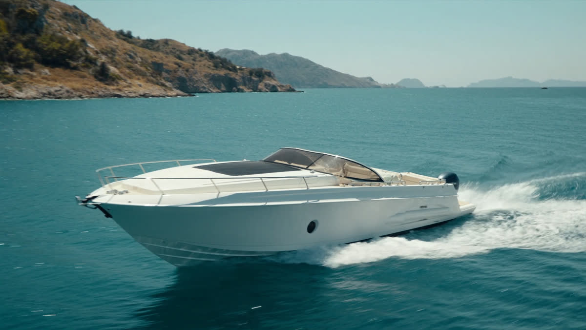
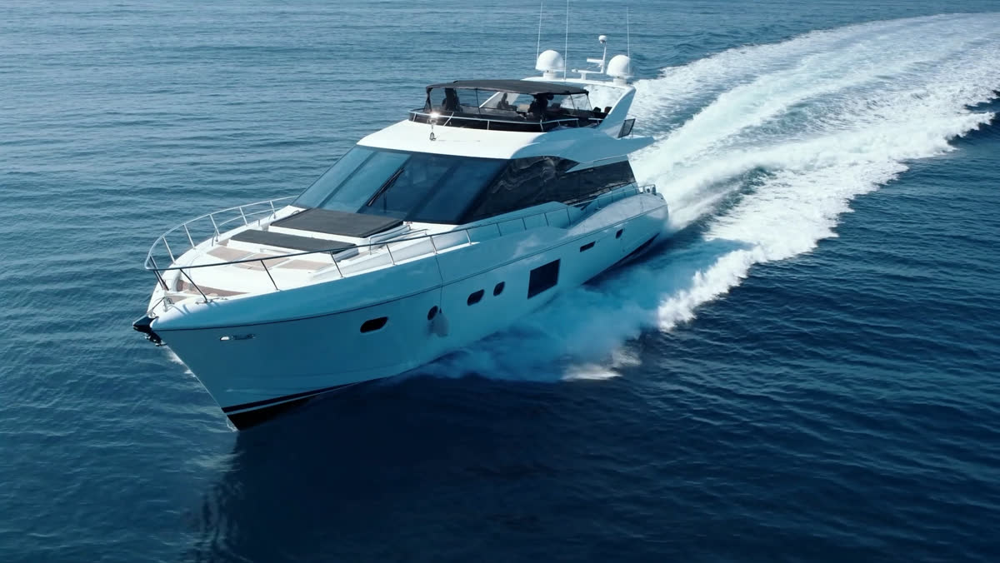
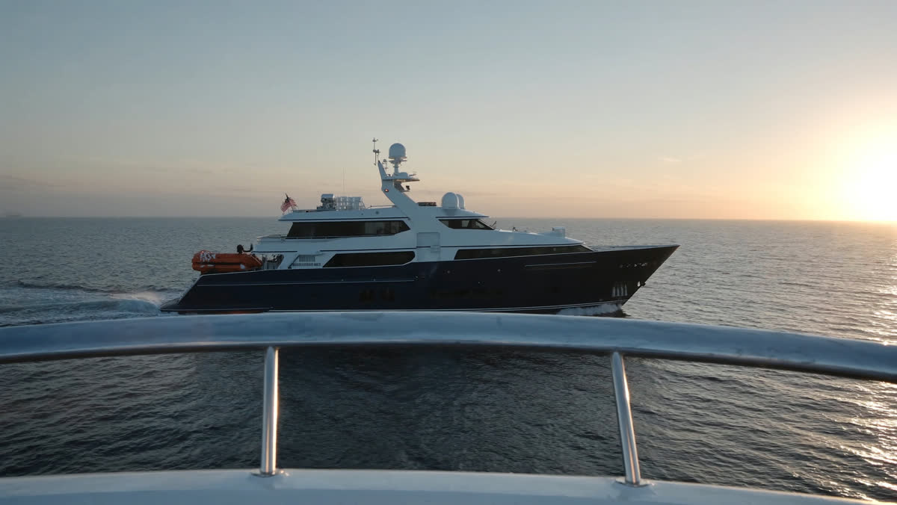
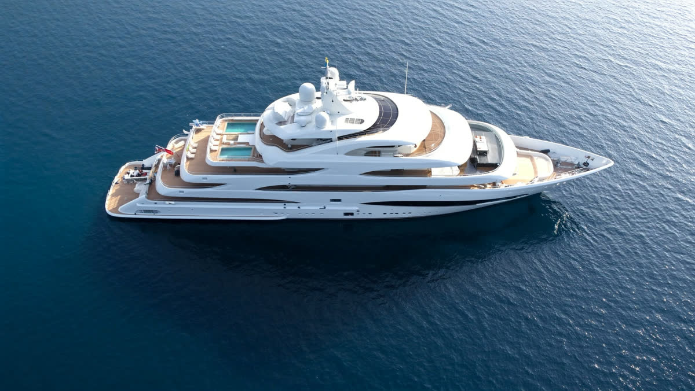

Where the coast
meets the open sea.
FLYBRIDGE COLLECTION
Grande 26M
Mahogany, leather,
and a hundred
metres of horizon.
The shortest
commute in the world.
SCROLL
Four vessels.
One commitment to craft.

DAY BOAT · 01
Verve 24
An entry into the atelier — a nimble open sport-tender for day trips along the coast. Twenty-four knots of effortless reach, and a swim deck built for an afternoon at anchor.
ENQUIRE →

SPORT CRUISER · 02
Atlantis 45
A coupé of the sea — hard lines, a glass superstructure, and two cabins finished in oak and linen. Built to cross to the islands before lunch.
ENQUIRE →

LONG RANGE · 03
Magellano 60
The navigator of the family — a dual-mode hull that carries a thousand miles in comfort, with a master suite that watches the horizon.
ENQUIRE →

FLAGSHIP SUPERYACHT · 04
Grande 140
Our flagship commission — a 42-metre trideck with a certified foredeck helipad, sundeck infinity pool, and full beach club. Eighteen months from contract to sea trial in Viareggio.
ENQUIRE →
Azimut. Since 1969.
CRAFT EXERCISE — NOT FOR PUBLICATION